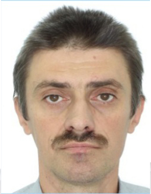

Д.Г. Ларін, О.В. Тузов. Основи концепції інтернет-речей. Методичні вказівки до лабораторних робіт. Частина 1. Дротові технології інтернет-речей. Електронне видання. – Одеса: ОНМУ 2023
Д.Г. Ларін, О.В. Тузов. Основи концепції інтернет-речей. Методичні вказівки до лабораторних робіт. Частина 2. Розробка інтерфейсів інтернет-речей. Програмування Processing. Електронне видання. – Одеса: ОНМУ 2023
Ларин Дмитро Георгійович
кандидат технічних наук, доцент
Основні публікації:
Індексовані в Scopus чи Web of Science:
- Dmitrieva, I., Larin, D. Analytic Research and Numerical Simulation of the Spatial Electromagnetic Wave Propagation (2018) UWBUSIS 2018 - 2018 9th International Conference on Ultrawideband and Ultrashort Impulse Signals, Proceedings, pp. 81-84.
У наукових виданнях, включених до переліку наукових фахових видань України:
- Бугаєва, І. Г., Розум, М. В., Ларін, Д. Г., & Ткаченко, М. Г. (2023). УПРАВЛІННЯ ТРАНЗАКЦІЯМИ В МІКРОСЕРВІСНІЙ АРХІТЕКТУРІ. Таврійський науковий вісник. Серія: Технічні науки, (2), 3-13.
- PolikarovskykhO., DausY., LarinD., & TkachenkoM. (2023). Systematization of Cyber Threats in Maritime Transport. Security of Infocommunication Systems and Internet of Things, (1), 01008. https://doi.org/10.31861/sisiot2023.1.01008
Тези доповідей:
- Ларін Д.Г. Організація дистанційного проведення лабораторних робіт з дисципліни "Вступ до робототехніки".//Збірник матеріалів IV Всеукраїнскої науково-практичної конференції "Освітня робототехніка та штучний інтелект", 11-12 квітня 2024 р., ДАНО, Дніпро. С. 85-87.
- Ларін Д.Г., Кільдешев В.Й. Захист інформації у вбудованих системах. // Матеріали IV Міжнародної науково-практичної конференції "Проектний та логістичний менеджмент: Нові знання на базі двох методологій", 7 листопада 2024 р. ОНМУ, Одеса.
- Проблеми комунікацій в автономних робототехнічних системах/ Ларін Д.Г./ 74 Професорсько-викладацька науково-технічна конференція ОНМУ 26-28 травня 2021 р.
- Розробка інтерфейсів ІоТ-рішень логістичних систем мовою Рrocessing. Ларін Д.Г./ ІХ Міжнародна науково-практична конференція «Проблеми розвитку транспортної логістики «Інтертранслог-2023», Одеса, 14-15 червня 2023 р.
Підручникі:
- Основи програмної інженерії : навч.-метод. посібник [Електронне видання] / О. Г. Трофименко, С. Ю. Манаков, Д. Г. Ларін. – Одеса : Фенікс, 2022. – 197 с. ISBN 978-966-928-808-0
Навчально-методичні посібникі:
Дисципліни, що викладає:
- Основи мехатроніки та робототехніки Робоча програма; Силабус
- Робототехніка та мехатроніка Робоча програма; Силабус
- Дослідження і проектування спеціалізованих комп'ютерних систем Робоча програма; Силабус